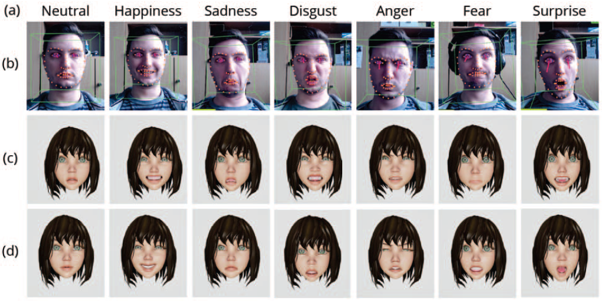

Comparing Methods for Mapping Facial Expressions to Enhance Immersive Collaboration with Signs of Emotion

ISMAR (2020) Poster / Short Paper
Authors
Natalie Hube, Oliver Lenz, Lars Engeln, Rainer Groh, Michael Sedlmair
Materials
Abstract
We present a user study comparing a pre-evaluated mapping approach with a state-of-the-art direct mapping method of facial expressions for emotion judgment in an immersive setting. At its heart, the pre-evaluated approach leverages semiotics, a theory used in linguistic. In doing so, we want to compare pre-evaluation with an approach that seeks to directly map real facial expressions onto their virtual counterparts. To evaluate both approaches, we conduct a controlled lab study with 22 participants. The results show that users are significantly more accurate in judging virtual facial expressions with pre-evaluated mapping. Additionally, participants were slightly more confident when deciding on a presented emotion. We could not find any differences regarding potential Uncanny Valley effects. However, the pre-evaluated mapping shows potential to be more convenient in a conversational scenario.